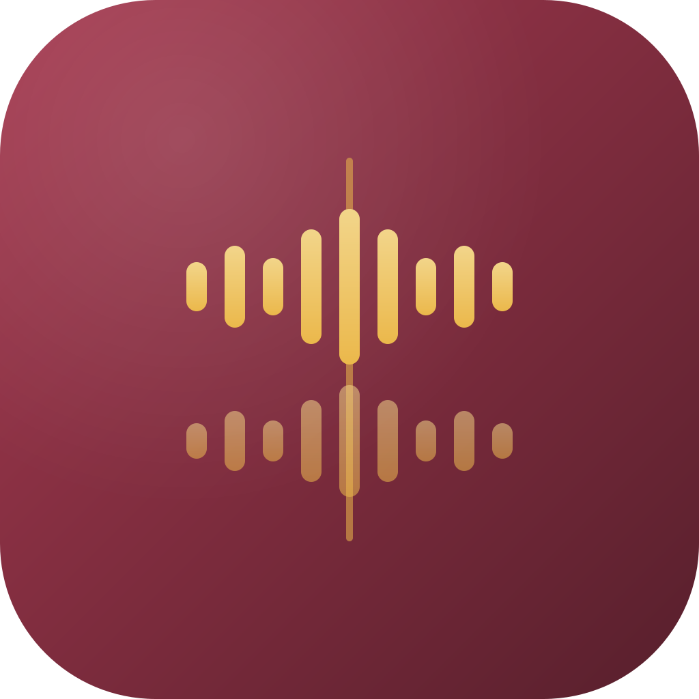

SundaySync
Syncs recordings from several cameras using their audio, and builds a timeline for DaVinci Resolve.
In development. Not ready for regular use yet.
You add the files from cameras, phones and audio recorders. The program compares the audio in the clips and lines them up with each other, without timecode or a clapper.
The result is exported as FCPXML, which opens in DaVinci Resolve. Everything happens locally on the computer.
Want to try it anyway? There is an unfinished test build for Mac (Apple Silicon) and Windows. Expect bugs and missing pieces. Source code on GitHub